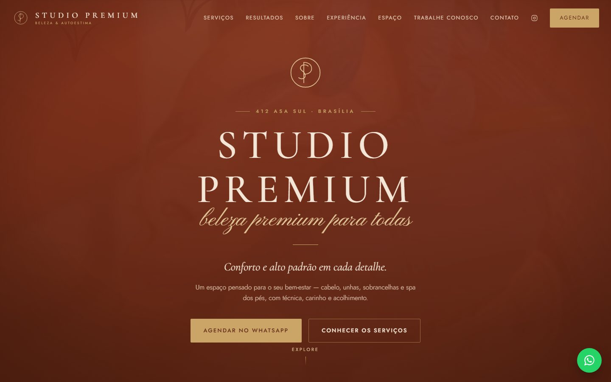
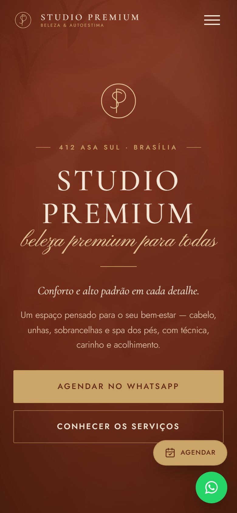

Sites e landing pages
Institucionais, de serviços e de captação. Rápidos, feitos para o celular e preparados para a busca local e para o WhatsApp.
Sites · Sistemas · Automação
Criamos sites, sistemas e automações para empresas de qualquer segmento e para o setor público. Em sites, você vê o protótipo antes de decidir.
O que fazemos
Institucionais, de serviços e de captação. Rápidos, feitos para o celular e preparados para a busca local e para o WhatsApp.
Cadastros, agendamentos, painéis e áreas restritas desenhados em torno do seu processo, quando nenhuma ferramenta pronta resolve.
Atendimento no WhatsApp, lembretes, integrações entre ferramentas e relatórios que se atualizam sozinhos.
Organização de fluxos, atendimento ao cidadão e painéis de informação, com segurança e atenção à LGPD desde o projeto.
Atendemos qualquer segmento
Seu segmento não está na lista? Se há processo, há o que organizar e automatizar.
O primeiro contato
Cases
Dois projetos reais, de segmentos diferentes, com o mesmo cuidado: clareza, velocidade e o caminho curto até o contato.


Beleza · Brasília
Site institucional de um salão de beleza premium na 412 Asa Sul: cabelo, unhas, sobrancelhas e spa dos pés, com resultados em vídeo, tour pelo espaço, página de vagas e agendamento pelo WhatsApp.
Contabilidade · Brasília
Site de um escritório de contabilidade consultiva, com foco em Simples Nacional, Lucro Presumido e Lucro Real, apresentação da equipe e contato direto com um especialista pelo WhatsApp.
Protótipo primeiro
Em vez de uma proposta cheia de promessas, começamos pelo que importa: o projeto com a cara da sua empresa.
Verificamos como a empresa aparece hoje, o que o cliente faz até falar com vocês e onde o processo trava.
Com as informações públicas da empresa, criamos uma primeira versão navegável, pensada para o celular.
Enviamos o link. Você abre no próprio celular, mostra para quem quiser e diz o que achou. Se não fizer sentido, tudo bem.
Aprovado, entram textos, imagens e dados oficiais. Revisamos juntos, colocamos no ar e seguimos com melhorias e automações.
Antes e depois
Projetos conceito, com empresas fictícias, para mostrar o que uma boa reformulação muda no primeiro olhar.
Sistemas e automação
Para empresas privadas e para o setor público: processos que hoje dependem de planilha, papel e mensagens soltas passam a seguir um fluxo claro.
Triagem das primeiras mensagens, encaminhamento e lembretes, sem substituir o atendimento humano onde ele importa.
Marcação online, confirmações e histórico dos clientes em um só lugar.
Os números da operação reunidos, em vez de espalhados por planilhas.
Ferramentas que hoje não conversam passam a trabalhar juntas. E, quando nada pronto serve, desenhamos a solução.
Solicitações, anexos e acompanhamento do andamento, com cada etapa registrada.
Canais organizados, respostas padronizadas e triagem para encaminhar cada pedido ao setor certo.
Informação consolidada para a gestão acompanhar a operação e prestar contas.
Dados tratados com atenção à LGPD desde o desenho do sistema. Trabalhamos dentro das regras de contratação e de segurança de cada órgão.
Padrão de entrega
É nele que boa parte dos seus clientes vai encontrar você. Por isso, cada tela começa pelo celular e depois se adapta ao computador.
O cliente chega até você com uma mensagem pronta, sem procurar número.
Estrutura e textos pensados para quem procura por serviço e região.
Site, endereço, telefone e horários coerentes no Google e na página.
Saúde, contabilidade e serviços públicos têm regras próprias de publicidade, privacidade e acessibilidade. Planejamos o projeto com isso desde o início. A validação final é sempre de quem responde pela área.
Onde estamos
Uma cidade que cresce e onde uma boa presença digital ainda diferencia negócios de qualquer segmento. Quando o cliente compara opções no celular, quem se apresenta melhor sai na frente.
Plano Piloto, Águas Claras, Taguatinga, Ceilândia, Samambaia, Gama: cada região tem seu público e sua busca. O site precisa falar com quem está perto do seu negócio.
Dúvidas
Não. Em sites, o protótipo existe para você avaliar sem compromisso. Só falamos em contratação se você quiser seguir.
Sites têm valor fechado antes de começar, com condições promocionais de lançamento. Sistemas e automações são orçados por escopo, depois de entendermos seu processo.
Não. Atendemos qualquer segmento e também o setor público. Cada projeto começa entendendo como o seu negócio funciona.
Não, e desconfie de quem garante. Entregamos um site tecnicamente preparado para a busca local e ajudamos a alinhar o seu perfil no Google. A posição depende também de concorrência, avaliações e localização.
Sim, principalmente se ele está fora do ar, com defeitos ou difícil de usar no celular. Avaliamos o que dá para aproveitar.
Sim: os cases acima são projetos reais. Onde ainda não temos um case, mostramos conceitos com empresas fictícias, sempre identificados como tal.
Conte o que você precisa. Sua mensagem será aberta no WhatsApp para você revisar e enviar.